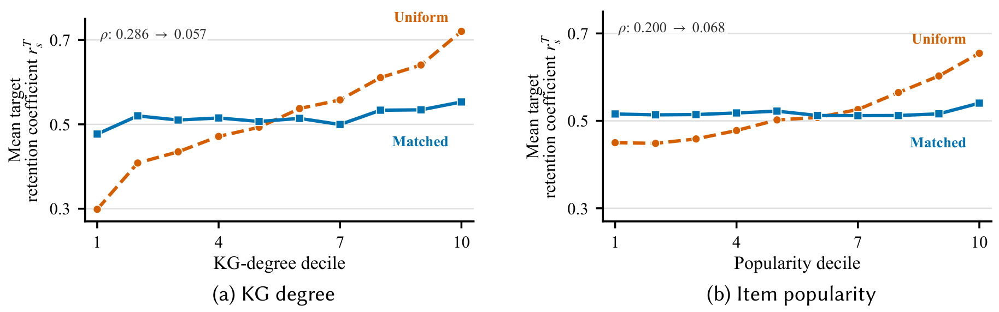
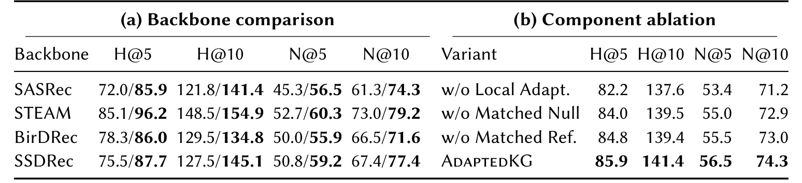

AdaptedKG：以结构匹配的知识图谱证据为序列推荐行为去噪
Adapting Knowledge Graphs for Behavior Denoising in Sequential Recommendation 由东北大学的 Zichun Jin、Zihan Zhou、Yinan Liu、Bin Wang 与 Xiaochun Yang 完成，公开于 2026 年 8 月 21 日，论文入口为 arXiv:2608.21243。该工作入选 ISWC 2026 Posters and Demos Track，研究对象是序列推荐中的行为噪声；截至本轮核验，未发现独立公开代码或项目页。
真实交互序列混合了长期偏好、短期需求、探索与偶发行为，单条交互对用户偏好的证明力并不相同；而知识图谱中的高连通性又会被物品流行度、节点度数、覆盖差异和公共实体放大，因此“路径多”不能直接等价为“这条行为可靠”。
1. 背景和问题
1.1 行为噪声同时污染历史表示与监督目标
序列推荐通常把用户在目标物品之前的交互压成一个历史表示，再预测下一个物品。这个建模方式隐含了一个强假设：历史里的点击、浏览或消费都能稳定反映偏好。现实日志并不满足它。用户可能因为临时任务、朋友推荐、价格波动、误触或单纯探索而接触某个物品；这类行为不一定与持续兴趣一致。若模型把它和稳定偏好同等编码，噪声会在两个位置生效：当它位于前缀中，会扭曲历史表征；当它成为训练目标时，又会提供不稳定的监督。前者改变“模型认为用户是谁”，后者改变“模型被要求预测什么”，所以只清洗历史或只重加权标签都不完整。
STEAM、BirDRec 与 SSDRec 等行为去噪方法已经尝试删除、插入、校正或自增强不可靠交互，但判断依据主要来自交互日志本身，例如共现、顺序、推荐器预测或学习到的行为关系。这些信号能反映统计一致性，却不能直接回答两个物品是否通过品牌、类型、开发商、主题等显式语义关系连接。知识图谱提供了外部的有类型关系，看起来正好可以弥补缺口。不过，把图表示直接注入推荐器并不等于解决“可靠性评估”：模型可能学习到更丰富的物品向量，却仍无法区分某条连接是当前样本独有的证据，还是任何热门物品都会获得的结构红利。
1.2 原始 KG 连通性为什么不能直接当可靠性
知识图谱路径计数至少受三类混杂影响。第一，热门物品在训练日志中更常出现，相关实体和关系也更容易被构建完整；第二，高度数节点天然拥有更多两跳路径，即使这些路径与当前用户意图无关；第三，被大量物品共享的实体会形成宽泛连接，例如一个常见类型或平台标签能把许多物品连在一起。于是，某个候选物品与上下文之间路径很多，既可能因为语义上真正一致，也可能只是因为它“容易连”。若直接用路径数量做保留权重，系统会把图谱覆盖偏差重新编码成行为可靠性偏差。
AdaptedKG 的问题设定因此不是“怎样让序列推荐器使用 KG 表示”，而是“怎样把固定 KG 转换为每个训练样本的校准证据”。它要求两次不同粒度的比较。先用与当前上下文在流行度、KG 度和链接状态上相似的替代上下文，判断哪些关系路径在本样本中异常突出；再固定这些路径，用结构相似的参考物品判断被评估交互的支持度是否真的超过同类物品。前一步消除上下文层面的结构背景，后一步消除候选物品自身的易连接性。两者顺序不能交换，因为若参考物品也参与路径选择，它们会改变待检验的局部证据集合。
1.3 论文选择了一条“离线适配、线上不碰图”的边界
这项工作的工程取舍很明确：知识图谱只负责产生训练样本级系数，不新增图编码器，不修改 SASRec、STEAM、BirDRec 或 SSDRec 的主体结构。训练时，历史交互的系数进入 embedding 门控，目标交互的系数进入损失重加权；推理时沿用原 backbone，不再访问 KG。这使 AdaptedKG 更像一个可插拔的数据与训练适配层，而不是新的图推荐模型。对已有线上链路而言，这种边界减少了推理延迟、图服务可用性和模型重构风险，但把成本转移到了离线阶段：每个训练样本都要构造匹配背景、枚举路径、选择局部视图并为历史项和目标项计算参照分位。
论文的证据也必须按短稿口径理解。它只有五页正文与参考文献，没有附录；实验证据集中在 Steam Games，一个图诊断结构偏置，一个表汇总四个 backbone 与三组消融。它能够说明“校准后的 KG 系数在指定设置下与多类去噪器兼容”，却还不能回答跨数据集稳定性、线上收益、统计显著性或离线图计算成本。阅读时最重要的不是把全部提升归因于“知识更丰富”，而是核对两次结构匹配是否分别解决了不同混杂，以及实验是否真的支持这种分工。
2. 方法
2.1 Matched-null context：先定义被评分交互的上下文
训练样本记为 $\mathcal D_s=(H_s,y_s)$，其中 $H_s=(x_{s,1},\ldots,x_{s,L_s})$ 只包含目标 $y_s$ 之前的交互。AdaptedKG 为历史位置和目标定义两类保留系数，先明确输入去噪与监督去噪使用的不同上下文：
符号解释：$H_s^{-j}$ 表示从历史中删除第 $j$ 个交互后的上下文，$r^H_{s,j}$ 是该历史项的保留系数；$r^T_s$ 使用完整前缀 $H_s$ 评价目标 $y_s$，得到目标权重。历史项必须 leave-one-out，是为了避免待评分物品通过“和自己相连”抬高支持度；目标本来不在前缀中，所以可以直接使用完整历史。这一差别让同一个函数 $R(v;C)$ 同时服务表示去噪和监督去噪，却没有泄露目标或自包含。
接着构造 matched-null contexts。对给定有序上下文 $C=(c_1,\ldots,c_n)$，方法逐位置寻找训练流行度、KG 度与 linkage status 相似的替代物品，形成 $B_A$ 个长度和顺序不变的背景上下文 $\{C_{0,b}\}_{b=1}^{B_A}$。这些 null 不是随机打乱当前序列，也不是负采样目标；它们模拟“如果只保留结构暴露条件、换掉具体物品，这类路径通常会出现多少”。第一次匹配的任务是给路径覆盖率建立可比背景，而不是直接给某个交互打分。如果匹配只看流行度而忽略 KG 度，图谱构建差异仍会泄漏；若不保留长度与顺序，有序物品对的数量和位置关系又会改变，null 分布便不再回答同一个问题。
2.2 Local KG：用显著路径生成样本条件化视图
论文把路径限制为有方向、有类型的两跳模式 $p=(r_1,c,r_2)$，其中连接实体 $c$ 把一个有序物品对连起来，$\varphi_p(u,v)$ 指示 $(u,v)$ 是否实例化该模式。为了比较观测值与一组可能包含并列值的 null 值，作者先定义中秩经验百分位：
符号解释：$t$ 是待比较数值，$\mathcal A$ 是非空参照多重集，$\mathbb I(\cdot)$ 为指示函数；严格低于 $t$ 的参照计 1，与 $t$ 相等的参照计 $1/2$。中秩处理避免大量相等的离散路径覆盖率被全部算在同一侧。$Q$ 越大，表示观测覆盖率在结构匹配背景中越靠上，但它本身不负责决定路径是否保留。
路径 $p$ 在当前上下文中的覆盖率按全部有序、非自反位置对计算。这样既尊重关系方向，又把不同长度上下文变成可比较的比例，避免长序列仅凭位置对更多而获得更大原始计数：
符号解释：$n(n-1)$ 是长度为 $n$ 的上下文中有序非自配对数量，$\kappa_p(C)$ 是其中被两跳模式 $p$ 覆盖的比例。这里保留方向很重要：若关系组合有方向性，$(c_a,c_b)$ 与 $(c_b,c_a)$ 不能混为一个无序对。单看 $\kappa_p$ 仍会偏爱常见路径，因此方法把它与每个 matched-null context 的 $\kappa_p(C_{0,b})$ 比较。
符号解释：$[\cdot]_+$ 是正部截断，$\alpha_p(C)$ 是路径的样本条件化权重，$B_A$ 为 matched-null 数量。第一个因子是硬门槛：观测覆盖率只有高于 null 中位数才非零；第二个因子是软排序：在通过门槛后，观测值相对 null 越突出，权重越高。所有 $\alpha_p(C)>0$ 的路径组成 $\mathcal P_C^*$，进而定义局部 KG 视图 $\mathcal G_C^*$。因此所谓“local”不是重新训练一个子图表示，而是针对当前样本保留一组经背景校准的关系模式及其权重；同一条全局 KG 路径在不同用户上下文中可能被保留，也可能被抑制。
2.3 Matched reference calibration：固定局部视图后再评分
局部路径已经排除了“不比相似上下文更突出”的模式，但候选物品仍可能因为自身高度数或高流行度而连接更多保留路径。AdaptedKG 再为待评估物品 $v$ 匹配 $B_R$ 个参考物品 $\{z_b\}_{b=1}^{B_R}$，匹配属性仍是训练流行度、KG 度与链接状态。关键约束是先固定 $\mathcal G_C^*$，再让 $v$ 和所有参考物品在同一局部视图中竞争。参考物品只能帮助解释一个支持分数在结构同类中处于什么位置，不能回过头改变路径选择；这正是 matched null 与 matched reference 不可合并为一次采样的原因。
候选在局部视图中的加权支持需要同时消除上下文长度和被保留路径总权重的量纲，否则长上下文或局部路径较多的样本会天然得到更大分数。论文据此定义：
符号解释：分子汇总候选 $v$ 与上下文各位置通过保留路径连接的权重，分母用上下文长度 $n$ 和全部保留路径权重归一化。$S_K(v\mid C)$ 可读作候选被局部关系证据覆盖的平均比例；它只度量图一致性，不直接等于点击概率或真实偏好。若某个物品连接很多路径但结构相似的参考物品同样如此，它的绝对 $S_K$ 可能高，排名却不会异常突出。
符号解释：$R(v;C)\in[0,1]$ 是最终保留系数；$Q$ 把候选支持度放到 matched-reference 分布里，乘 2 后在 1 处截断。若候选低于参考中位位置，$R<1$ 并被下调；达到或超过中位位置后，$R=1$。这种设计是保守门控而不是奖励放大：KG 证据只削弱缺乏相对支持的交互，不会把“比参照更强”的交互权重推到 1 以上。代价是上半区支持度差异被压平，模型无法借此强化极高置信交互；论文选择的是减少误伤而非追求更激进的图增强。为检查上一式是否真的完成了“相对结构同类校准”，作者固定 target queries、local path views 和参照物品数量，只改参照采样器：一组均匀采样，一组按流行度、KG 度和链接状态匹配。这个对照直接对应 $R$ 的设计目标：若 matched reference 有效，保留系数不应再随物品的度数或流行度机械上升。

Figure 1 左图按 KG-degree decile 分桶。均匀参照下，平均目标保留系数随度数从约 0.30 持续升至 0.7 以上，Spearman 相关系数为 $0.286$；结构匹配后，蓝线大体稳定在 0.48–0.55，相关降到 $0.057$。右图按物品流行度分桶，均匀参照同样从约 0.45 上升至约 0.65，相关为 $0.200$；匹配后多数分位维持在约 0.51，最高分位略升，相关降到 $0.068$。按绝对相关幅度看，KG 度侧减少 $0.229$，流行度侧减少 $0.132$。两条蓝线都比橙线平，说明候选支持度经过结构同类分位化后，不再直接把“容易连”映射成“应该保留”。这张图支持 matched reference 对 $R$ 的去混杂作用，但它不是无偏性证明：相关没有严格归零，也没有检查其他结构混杂。更关键的边界是，蓝线变平本身不等于推荐更准；如果真实偏好确实与热门物品或高 KG 度有关，完全消除相关反而可能损失有效信号。因此这里验证的是校准机制按预期改变了系数的依赖方式，最终价值还要与 Table 1 的排名指标合并判断。
2.4 History gate 与 target-loss：训练注入、推理脱图
得到两类系数后，历史项先在输入侧门控。这条接口不删除 token，也不改变位置索引，而是在原 backbone 读取 embedding 之前缩放每个位置的有效信号：
符号解释：$e(x_{s,j})$ 是原 backbone 的物品 embedding，$\widetilde e_{s,j}$ 是门控后表示，$\widetilde H_s$ 是整条门控历史，$f_\theta$ 为序列编码器，$\ell_s$ 为该样本的交叉熵损失。$r^H$ 越低，交互对序列表征的贡献越小，但位置本身没有被删除，因此模型仍保留原长度和顺序接口。论文没有引入新的图神经网络参数；保留系数与推荐优化解耦并停止梯度。
目标侧则使用归一化加权批损失。与历史门控改变编码输入不同，这一步不改变前向表示，只改变每个训练目标对批次梯度的贡献：
符号解释：$\mathcal B$ 是训练批次，$r^T_s$ 是目标可靠性，分母让有效权重规模变化不会直接改变损失量级；若分母非正，论文回退到未加权均值。历史门控处理输入污染，目标加权处理监督污染，它们复用同一校准函数却作用在不同梯度路径。若上下文长度 $n<2$、无法构造有效匹配背景或参考集合，或 $\mathcal P_C^*=\varnothing$，KG 通道统一取 $R(v;C)=1$ 并跳过未定义量。这个回退保证失败时不擅自删除行为，但也意味着 KG 覆盖最差的样本恰恰得不到去噪。
训练与推理的差异由此非常清楚。训练前或训练期间的离线流程读取训练交互和固定 KG，计算 sample-specific retention coefficients；训练主体只消费这些系数。推理时输入仍是普通物品序列，backbone 的编码和打分流程不变，不需要实时路径枚举、参考采样或图数据库访问。论文声称的是“无推理 KG 依赖”，不是“没有额外成本”：匹配、路径统计和系数存储的离线复杂度没有在短稿中量化，若日志频繁更新或 KG 版本变化，重算策略将直接决定工程可用性。
3. 实验结果
3.1 数据、backbone 与对照口径
实验只使用 Steam Games。论文报告 25,389 名用户、4,089 个物品、328,278 次交互，以及包含六种关系的 462,016 条 KG 三元组。推荐主干包括标准序列模型 SASRec，以及三种行为去噪模型 STEAM、BirDRec 和 SSDRec，均在 RecBole 中实现。指标是 HR@5、HR@10、NDCG@5 和 NDCG@10；Table 1 把数值统一写成乘以 $10^3$ 的形式。对每个 backbone 及其 AdaptedKG 版本，数据划分、候选集和 backbone 超参数保持一致；保留系数与交互侧匹配统计只使用训练分区。这一配对控制能把差异集中到 AdaptedKG 注入，但短稿没有披露随机种子数、方差、显著性检验与完整超参数，因此只能把表中差值视为该实现下的观察结果。
测试对象覆盖“无既有去噪”和“已有去噪”两种场景。SASRec 用来检验 KG 可靠性系数能否单独帮助标准序列模型；STEAM、BirDRec、SSDRec 则检验图谱外部证据是否与日志内去噪互补。这个设计比只在 SASRec 上报告一组结果更能说明插件兼容性，但四个模型仍共享同一个数据集和评测框架，并不等于跨领域泛化。尤其 Steam 的游戏实体与关系可能比新闻、短视频或电商 SKU 更稳定，KG 连接质量的结论不能直接迁移。
3.2 匹配参照是否真的削弱结构暴露偏置
作者固定 target queries、local path views 和参考物品数量，只改变参考采样器：一组均匀采样，一组按流行度、KG 度和链接状态匹配。这样 Figure 1 观察到的差异不能来自路径重选或样本集合变化，而应主要归因于参照分布是否结构可比。
Figure 1 左图按 KG-degree decile 分桶。均匀参照下，平均目标保留系数随度数从约 0.30 持续升至 0.7 以上，Spearman 相关系数为 $0.286$；结构匹配后，蓝线大体稳定在 0.48–0.55，相关降到 $0.057$。右图按物品流行度分桶，均匀参照同样从约 0.45 上升至约 0.65，相关为 $0.200$；匹配后多数分位维持在约 0.51，最高分位略升，相关降到 $0.068$。按绝对相关幅度看，KG 度侧减少 $0.229$，流行度侧减少 $0.132$。这支持“matched reference 让 $R$ 少依赖结构暴露”的机制主张，但它不是无偏性的证明：相关没有严格归零，也没有检查其他潜在混杂或校准后与真实噪声标签的关系。
更值得注意的是蓝线的平坦并非自动等于推荐更准。若真实偏好本就与热门物品或高 KG 度有关，完全消除相关可能损失有效信号；图中只说明结构匹配成功改变了系数的依赖方式。论文用 Table 1 的推荐指标补上第二层证据：去相关之后，四个 backbone 的离线推荐结果同时提高。两类证据合在一起，才比“线更平”更接近完整论证；仍然缺少的是对 retention coefficient 与人工或合成噪声标签的直接校准评估。
3.3 主结果：四类 backbone 的一致收益
Table 1(a) 每格斜线前是原 backbone，斜线后是加入 AdaptedKG 的结果；Table 1(b) 在 SASRec 上比较三个去除模块的变体与完整方法。

Table 1(a) 显示 16 个配对指标全部上升。SASRec 的 H@5/H@10 从 72.0/121.8 增至 85.9/141.4，N@5/N@10 从 45.3/61.3 增至 56.5/74.3；绝对增量为 13.9、19.6、11.2、13.0，对应约 19.3%、16.1%、24.7%、21.2% 的相对变化。标准 backbone 上的增幅最大，说明 KG 系数在没有既有行为修正时提供了明显附加信号。STEAM 的四项结果从 85.1/148.5/52.7/73.0 变为 96.2/154.9/60.3/79.2；BirDRec 从 78.3/129.5/50.0/66.5 变为 86.0/134.8/55.9/71.6；SSDRec 从 75.5/127.5/50.8/67.4 变为 87.7/145.1/59.2/77.4。后三者本就有日志侧去噪，仍在全部指标上获益，支持显式 KG 关系与行为统计不是完全重复的信息源。
不同 backbone 的增幅并不均匀。STEAM 在 H@10 上只增加 6.4，约 4.3%；BirDRec 的 H@10 增加 5.3，约 4.1%；SSDRec 的 H@10 增加 17.6，约 13.8%。这可能与各方法原有纠错机制、目标优化和序列表征不同有关，但论文没有提供交互分析，不能据此断言 AdaptedKG 与某类去噪器天然更兼容。表中粗体表示增强后或完整模型数值较高，不能替代跨种子不确定性；短稿也未说明这些差值是否统计显著。
还要区分排名指标的含义。HR 只问真实目标是否进入 top-$K$，NDCG 还对其位置加折扣；SASRec 上 N@5 相对增幅高于 H@5，说明收益不仅可能体现在命中更多目标，也可能把已命中的目标推到更靠前位置。但表格没有用户分群、序列长度分桶或噪声强度分桶，因此不知道收益主要来自长历史、高噪声用户、KG 覆盖充分物品，还是全体样本的均匀小幅改善。工程评审若只看四个总体数值，容易忽略适配层最依赖的正是结构覆盖与可匹配性。
3.4 消融：局部适配是主导项，两类匹配各自补强
Table 1(b) 以 SASRec 为底座。完整 AdaptedKG 为 85.9/141.4/56.5/74.3；去掉整个 local adaptation、改用全局路径集合与上下文无关权重后，降为 82.2/137.6/53.4/71.2，四项分别下降 3.7、3.8、3.1、3.1。这是三种变体中最大的整体损失，说明“每个样本选择不同路径”比单纯拥有全局 KG 路径更关键。换言之，表中支持的不是泛化的“KG 越多越好”，而是局部化和校准共同决定图证据是否可用。
仅去掉 matched-null 时仍保留上下文局部视图，但令 $\alpha_p(C)=\kappa_p(C)$，结果为 84.0/139.5/55.0/72.9；相对完整方法下降 1.9、1.9、1.5、1.4。仅把 matched reference 换成 uniform reference，结果为 84.8/139.4/55.5/73.0，下降 1.1、2.0、1.0、1.3。两个变体在全部指标上都不如完整方法，与论文为两次匹配赋予的分工一致：matched null 修正路径是否异常突出，matched reference 修正候选支持是否只是结构暴露。不过两组差值接近，且没有误差条，不能据此稳定排序两种校准谁“更重要”；Figure 1 更直接地验证了 reference matching 的去相关作用，null matching 则缺少同等级别的独立路径诊断图。
3.5 效率、鲁棒性与外推证据仍为空白
论文没有报告离线系数生成的运行时间、内存、$B_A$ 与 $B_R$ 的敏感性、路径枚举规模或 KG 更新后的增量计算方案。推理无 KG 访问是清楚的系统优点，却不能回答每日新增日志、物品冷启动和图谱版本变化时的重算成本。它也没有给出无 KG linkage 样本比例、触发 $R=1$ 回退的频率，或不同覆盖分桶的收益；若大量样本无法构造有效参照，实际有效覆盖会低于整体数据规模暗示。
鲁棒性方面，论文校准了流行度与 KG 度，但没有主动破坏 KG 边、加入错误实体链接或改变关系稀疏度，因此“对 KG 偏置更稳健”只在两个结构变量的相关诊断上成立。实验没有线上 A/B、延迟、吞吐、用户长期满意度，也没有和图表示注入型 KG 推荐模型比较；所以它证明的是训练适配层对既有 backbone 的离线互补，不是对所有 KG 推荐路线的全面优越。由于代码尚未核验公开，数据预处理、结构匹配容差、参考采样复现与 exact candidate evaluation 细节也仍需等待实现或更长版本。
4. 总结
4.1 我的判断与工程含义
AdaptedKG 最值得保留的思想是把 KG 从“线上表示组件”改造成“离线可靠性参照系”。两次结构匹配分别估计路径背景和候选背景，随后用 $r^H$、$r^T$ 同时控制历史表示与目标监督；而 $R\le1$、失败时回退到 1，使这套机制保持保守。对成熟推荐链路，这比替换 backbone 更容易做灰度：可以先离线产出系数，验证覆盖率和分桶收益，再决定是否进入训练。对个性化大模型或 Agent 记忆也有迁移价值：知识图谱、实体关系或工具依赖可先转成“这条历史记忆相对结构同类是否得到支持”的权重，再用于记忆门控或训练样本加权，而不必把图检索加入每次生成。
证据强度目前属于“机制与方向可信，外推仍需补齐”。Figure 1 表明 matched reference 明显削弱系数对 KG 度和流行度的依赖，Table 1 又显示四个 backbone 全指标同向提升；两者能互相支撑。与此同时，全部实验来自单一数据集和单表汇总，无法判断收益是否稳定、成本是否可接受。更合适的定位是：它提供了一种清楚的去混杂式 KG 用法，以及值得在更完整实验中复核的插件接口，而不是已经成熟的通用线上方案。
4.2 局限与后续跟进
局限至少有四点。第一，只有 Steam Games，一个领域无法覆盖电商、短视频、新闻等更高时效、更弱实体对齐的场景。第二，没有多随机种子、方差或显著性检验，表中一致提升仍可能受训练波动影响。第三，没有离线效率和存储审计；matched-null、matched-reference 与两跳路径枚举可能把推理成本转移为不可忽略的训练前处理成本。第四，KG 的错误边、缺失边与关系噪声未被扰动测试，结构匹配只能校正已选择的暴露变量，不能自动保证语义正确。第五，没有报告回退到 $R=1$ 的样本占比和冷启动覆盖，适配层可能在最稀疏样本上失效。第六，未核验到代码或项目页，匹配桶定义、采样容差和重算策略尚不可复查。
后续应优先做三类工作。其一，在至少一个电商和一个内容推荐数据集上复现，并按流行度、KG 度、序列长度、噪声强度和 linkage status 分桶，同时报告均值、方差与显著性，以确定收益来自哪些用户和物品。其二，补齐系统审计：记录 $B_A/B_R$、候选路径数、单样本计算量、缓存复用、KG 更新后的增量重算与完整训练墙钟时间，验证“推理无图”是否换来了可接受的离线成本。其三，做 KG 质量压力测试，分别随机删边、注入错误边、降低实体对齐率，并统计 $R=1$ 回退频率和指标变化，判断校准机制面对图谱噪声时是保守失效还是传播错误。
还可进一步比较三种设计：只做历史门控、只做目标损失加权，以及两者同时启用，从而确认增益究竟来自输入去噪还是监督去噪；再把 $R$ 的硬截断替换为可调温度或保序校准，检查上半区全部饱和为 1 是否丢失有价值的强证据。只有这些问题得到回答，AdaptedKG 才能从一个短稿中的精巧训练适配思路，成长为可评估、可维护、可上线的通用行为可靠性组件。